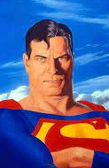
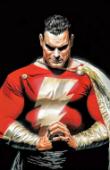
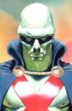

Selecione um Personagem
- 
- 
- 
Superman
Superman tem diversos poderes sobre-humanos: pode voar, tem força descomunal, visão de raio-x, visão de calor, supersopro, superaudição e invunerabilidade.
Superman tem diversos poderes sobre-humanos: pode voar, tem força descomunal, visão de raio-x, visão de calor, supersopro, superaudição e invunerabilidade.